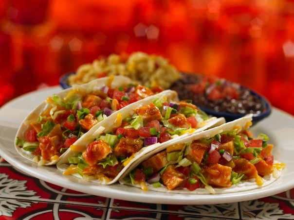

Home
Welcome to Bluejack Foodhall

BlueJack Foodhall was firstly opened in March 1991 with the goal of providing great food, great services at an affordable price. We focus on customer's loyalty and satisfaction. We believe in making every dining experience memorable, so that the customers will keep coming back for more, since the key to be a successful restaurant business is to provide a great and positive customer experience.